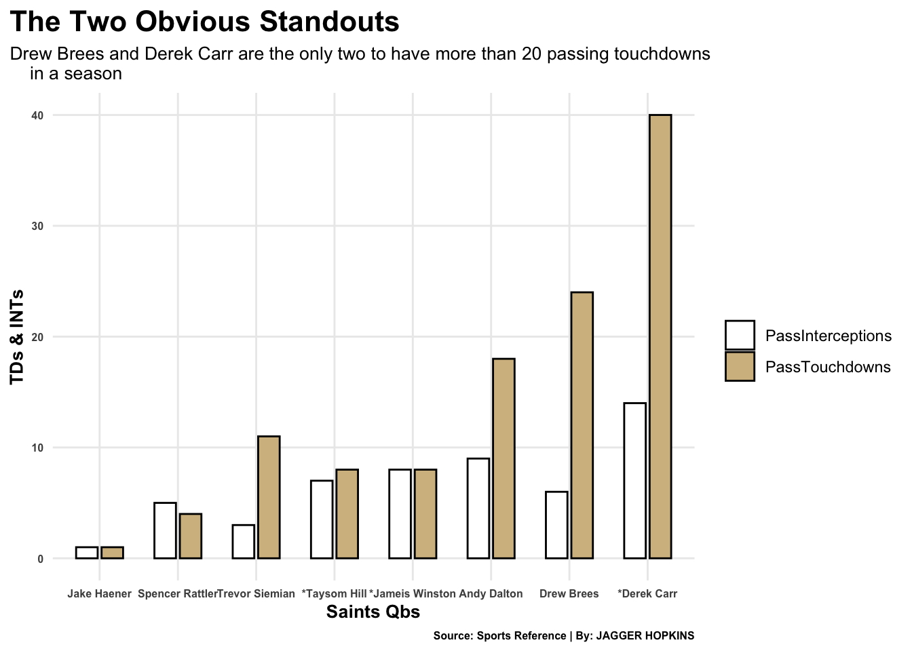
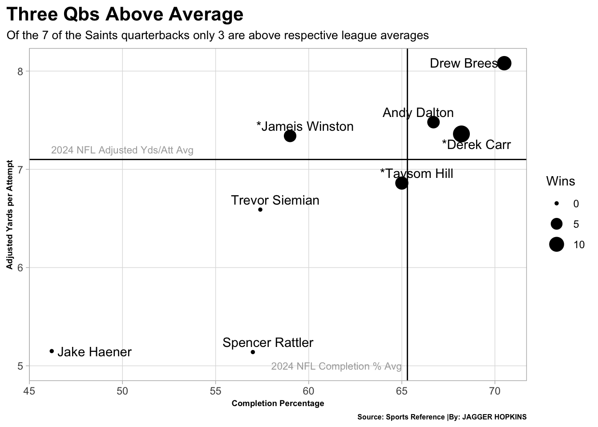

The New Orleans Saints have been in nothing but decline after the retirement of one of the greatest to ever do it, Drew Brees. Brees was retiring after a pretty successful season, leading the NFC south with a 12-4 record and ultimately losing to the Tampa Bay Buccaneers in the divisional round of the playoffs.
Even with Sean Payton staying for the 2021 season, there was still confusion as to who should replace Brees and lead the franchise to more success. Since Brees retired the Saints have had 7 different quarterbacks to start one or more games.
While there were options, they were not of the highest caliber.There were questions about Jamies Winston coming into the regular season, yes he sat behind Brees for a season but he just got off of a 30-30 season. Yes the infamous 30 touchdowns and 30 interceptions season.
The next best option was Taysom Hill, the football swiss army knife. There was promise, he put the NFL on notice by doing everything on the field while being able to throw darts. Sean Payton knew that Hill could step in for the staring job, but did Payton want to give up such a versatile athlete by making him the start. To keep it simple, no.
Since this dilemma the Saints have had 7 different quarterbacks to start one or more games.
In the past two season the Saints have combined for a total of 12 wins, the total Brees had in his final season. The season that everyone called Brees washed. So to say that New Orleans has been in turmoil is an understatement.
The first question I want to ask is, who is scoring while limiting turnovers. Here are the 7 quarterbacks, notice that * means combined seasons.
Code
library(tidyverse)
── Attaching core tidyverse packages ──────────────────────── tidyverse 2.0.0 ──
✔ dplyr 1.1.4 ✔ readr 2.1.6
✔ forcats 1.0.1 ✔ stringr 1.6.0
✔ ggplot2 4.0.1 ✔ tibble 3.3.0
✔ lubridate 1.9.4 ✔ tidyr 1.3.1
✔ purrr 1.2.0
── Conflicts ────────────────────────────────────────── tidyverse_conflicts() ──
✖ dplyr::filter() masks stats::filter()
✖ dplyr::lag() masks stats::lag()
ℹ Use the conflicted package (<http://conflicted.r-lib.org/>) to force all conflicts to become errors
ggplot(data=INTTDlong,aes(x =reorder(Player,amount),y = amount,fill = Type)) +geom_col(width= .55,position =position_dodge(.65),color="black")+scale_fill_manual(values =c("white","#D3BC8D")) +labs(y ="TDs & INTs",x ="Saints Qbs",fill ="",title ="The Two Obvious Standouts",subtitle ="Drew Brees and Derek Carr are the only two to have more than 20 passing touchdowns in a season",caption="Source: Sports Reference | By: JAGGER HOPKINS" ) +theme_minimal() +theme(plot.title =element_text(size =16, face ="bold"),plot.title.position ="plot",plot.subtitle =element_text(size =10),axis.title =element_text(size =10, face ="bold"),axis.text.y =element_text(size =6, face ="bold"),axis.text.x =element_text(size =6, face ="bold"),panel.grid.minor =element_blank(),plot.caption =element_text(size =6, face ="bold") )

Code
#| include: falseggsave("image.png")
Saving 7 x 5 in image
Since 2020 Derek Carr leads the saints in single season touchdowns with 25, leading Brees by one. The next best being Andy Dalton with 18, every other quarterback having 11 or less passing touchdowns.
Touchdowns and Interceptions are very important to a quarterback and his offense, but its not everything. A good quarterback should be able to accurately push the ball down the field. This plays off touchdowns and interceptions, in a way. If a quarterback is scoring a lot of touchdowns and minimizing interceptions, then one should notice a good completion percentage and yards per attempt.
How does the theory apply to the Saints quarterbackss?
ggplot()+geom_point(data=CmPAYa, aes(x=CmpP, y=AYa, size = Wins))+geom_text_repel(data=CmPAYa, aes(x=CmpP, y=AYa, label=Player) ) +geom_vline(xintercept =65.3) +geom_hline(yintercept =7.1) +geom_text(aes(x =61.5, y =5),label ="2024 NFL Completion % Avg",size =3,color ="dark grey") +geom_text(aes(x =50, y =7.2),label ="2024 NFL Adjusted Yds/Att Avg",size =3,color ="dark grey" ) +labs(x ="Completion Percentage",y ="Adjusted Yards per Attempt",title ="Three Qbs Above Average ", subtitle ="Of the 7 of the Saints quarterbacks only 3 are above respective league averages", caption="Source: Sports Reference |By: JAGGER HOPKINS" ) +theme_light() +theme(plot.title =element_text(size =16, face ="bold"),plot.subtitle =element_text(size =10),axis.title =element_text(size =8),panel.grid.minor =element_blank(),axis.title.x =element_text(size =7, face ="bold"),axis.title.y =element_text(size =7, face ="bold"),plot.title.position ="plot",plot.caption =element_text(size =6, face ="bold") )

The two graphs do show a good correlation, you can see that the three highlighted before are the ones who are above the league averages. So, there has been two quarterbacks after Brees to be some what close to replacing him. Maybe New Orleans should have stuck with Carr for a little longer.
Since the Saints have had a lot of different quarterbacks, lets take a look a just the season. After all it is a team sport.
One of the most talked about attributes talked about when talking about productive quarterbacks is decision making. Is he making the right read, or does he look panic and rushing the throw the ball. There have been three different rookies that have started for the Saints, so you would expect there to be some bad balls thrown.
So lets take a look at the Saints bad throw and on target throw percentage since 2020.
Accuracy |>gt() |>cols_label(`Bad%...5`="Bad Throw Percent",`OnTgt%...6`="On Target Throw Percent",Season ="Season" )|>tab_header(title ="Progressive Decline/Incline in Both Categories",subtitle ="Saints offense plummits in on target throws and then starts to slowly decline, vis versa for bad throw percent" ) |>tab_style(style =cell_text(color ="black", weight ="bold", align ="left"),locations =cells_title("title") ) |>tab_style(style =cell_text(color ="black", align ="left"),locations =cells_title("subtitle") ) |>tab_source_note(source_note =md("**By:** JAGGER HOPKINS | **Source:** Sports Reference ") ) |>tab_style(locations =cells_column_labels(columns =everything()),style =list(cell_borders(sides ="bottom", weight =px(3)),cell_text(weight ="bold", size=12) ) ) |>opt_row_striping() |>opt_table_lines("none") |>tab_style(style =list(cell_fill(color ="black"),cell_text(color ="#D3BC8D") ),locations =cells_body(rows = Season =="2020" ))
Progressive Decline/Incline in Both Categories
Saints offense plummits in on target throws and then starts to slowly decline, vis versa for bad throw percent
Bad Throw Percent
On Target Throw Percent
Season
13.7
80.2
2020
16.0
79.1
2023
14.2
76.9
2022
16.2
73.7
2024
18.7
72.9
2021
By: JAGGER HOPKINS | Source: Sports Reference
In 2020 the Saints offense had a 80.2 percent on target throws, then a 72.9 percent on target throw in 2021, that is a 9.1 percent decrease in just one year. After that it got a little bit better and then has been down hill since then. Its a similar story with bad throws, from 2020 to 2021 there is a 36.5 percent increase. Followed by a decrease in this matter and then pretty consistent from 2023-2024.